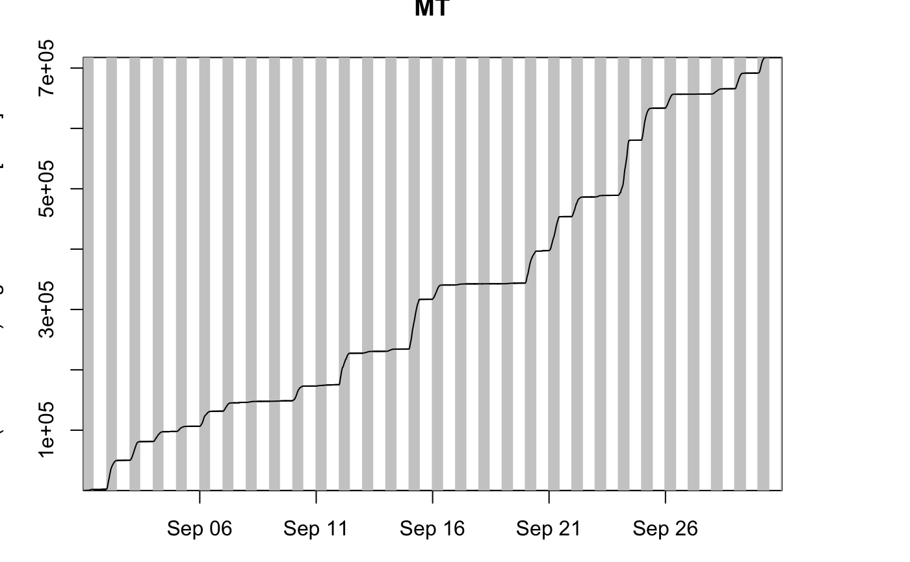
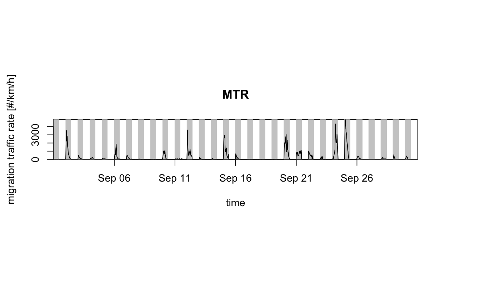

vp or vpts) to an integrated profile (vpi)Performs a vertical integration of density, reflectivity and migration traffic rate, and a vertical averaging of ground speed and direction weighted by density.
integrate_profile(x, alt.min, alt.max, alpha = NA, interval.max = Inf) # S3 method for vp integrate_profile(x, alt.min = 0, alt.max = Inf, alpha = NA, interval.max = Inf) # S3 method for list integrate_profile(x, alt.min = 0, alt.max = Inf, alpha = NA, interval.max = Inf) # S3 method for vpts integrate_profile(x, alt.min = 0, alt.max = Inf, alpha = NA, interval.max = Inf)
| x | A |
|---|---|
| alt.min | Minimum altitude in m. |
| alt.max | Maximum altitude in m. |
| alpha | Migratory direction in clockwise degrees from north. |
| interval.max | Maximum time interval belonging to a single profile in
seconds. Traffic rates are set to zero at times |
an object of class vpi, a data frame with vertically
integrated profile quantities
The function generates a specially classed data frame with the following quantities:
datetimePOSIXct date of each profile in UTC
vidVertically Integrated Density in individuals/km^2.
vid is a surface density, whereas dens in vp
objects is a volume density.
virVertically Integrated Reflectivity in cm^2/km^2
mtrMigration Traffic Rate in individuals/km/h
rtrReflectivity Traffic Rate in cm^2/km/h
ffHorizontal ground speed in m/s
ddHorizontal ground speed direction in degrees
uGround speed component west to east in m/s
vGround speed component north to south in m/s
HGHTHeight above sea level in m
Vertically integrated density and reflectivity are related according to \(vid=vir/rcs(x)\), with rcs the assumed radar cross section per individual. Similarly, migration traffic rate and reflectivity traffic rate are related according to \(mtr=rtr/rcs(x)\)
See mtr for further information on the definition of migration traffic rate.
vp: Vertically integrate a vertical profile.
list: Vertically integrate a list of
vertical profiles.
vpts: Vertically integrate a time series of
vertical profiles.
# MTR for a single vertical profile integrate_profile(example_vp)#> Warning: 'sd_vvp' is deprecated. #> Use 'rvsd' instead. #> See help("Deprecated")#> Warning: 'sd_vvp' is deprecated. #> Use 'rvsd' instead. #> See help("Deprecated")#> Warning: 'sd_vvp' is deprecated. #> Use 'rvsd' instead. #> See help("Deprecated")#> Warning: 'sd_vvp' is deprecated. #> Use 'rvsd' instead. #> See help("Deprecated")#> Warning: 'sd_vvp' is deprecated. #> Use 'rvsd' instead. #> See help("Deprecated")#> Warning: 'sd_vvp' is deprecated. #> Use 'rvsd' instead. #> See help("Deprecated")#> datetime mtr vid vir rtr mt rt ff #> 1 2015-10-18 18:00:00 4108.289 89.08468 983.9208 45191.18 NA NA 12.7895 #> dd u v HGHT #> 1 204.4764 -5.298934 -11.64013 0# MTRs for a list of vertical profiles integrate_profile(c(example_vp, example_vp))#> Warning: 'sd_vvp' is deprecated. #> Use 'rvsd' instead. #> See help("Deprecated")#> Warning: 'sd_vvp' is deprecated. #> Use 'rvsd' instead. #> See help("Deprecated")#> Warning: 'sd_vvp' is deprecated. #> Use 'rvsd' instead. #> See help("Deprecated")#> Warning: 'sd_vvp' is deprecated. #> Use 'rvsd' instead. #> See help("Deprecated")#> Warning: 'sd_vvp' is deprecated. #> Use 'rvsd' instead. #> See help("Deprecated")#> Warning: 'sd_vvp' is deprecated. #> Use 'rvsd' instead. #> See help("Deprecated")#> Warning: 'sd_vvp' is deprecated. #> Use 'rvsd' instead. #> See help("Deprecated")#> Warning: 'sd_vvp' is deprecated. #> Use 'rvsd' instead. #> See help("Deprecated")#> Warning: 'sd_vvp' is deprecated. #> Use 'rvsd' instead. #> See help("Deprecated")#> Warning: 'sd_vvp' is deprecated. #> Use 'rvsd' instead. #> See help("Deprecated")#> Warning: 'sd_vvp' is deprecated. #> Use 'rvsd' instead. #> See help("Deprecated")#> Warning: 'sd_vvp' is deprecated. #> Use 'rvsd' instead. #> See help("Deprecated")#> datetime mtr vid vir rtr mt rt ff #> 1 2015-10-18 18:00:00 4108.289 89.08468 983.9208 45191.18 NA NA 12.7895 #> 2 2015-10-18 18:00:00 4108.289 89.08468 983.9208 45191.18 NA NA 12.7895 #> dd u v HGHT #> 1 204.4764 -5.298934 -11.64013 0 #> 2 204.4764 -5.298934 -11.64013 0# MTRs for a time series of vertical profiles # load example data: data(example_vpts) example_vpts#> Irregular time series of vertical profiles (class vpts) #> #> radar: KBGM #> # profiles: 6135 #> time range (UTC): 2016-09-01 00:02:00 - 2016-09-30 23:58:00 #> time step (s): min: 180 max: 16320# print migration traffic rates vpi <- integrate_profile(example_vpts) # plot migration traffic rates for the full air column plot(example_vpts)#> Warning: Irregular time-series: missing profiles will not be visible.Use 'regularize_vpts' to make time series regular.# plot migration traffic rates for altitudes > 1 km above sea level plot(integrate_profile(example_vpts, alt.min = 1000))